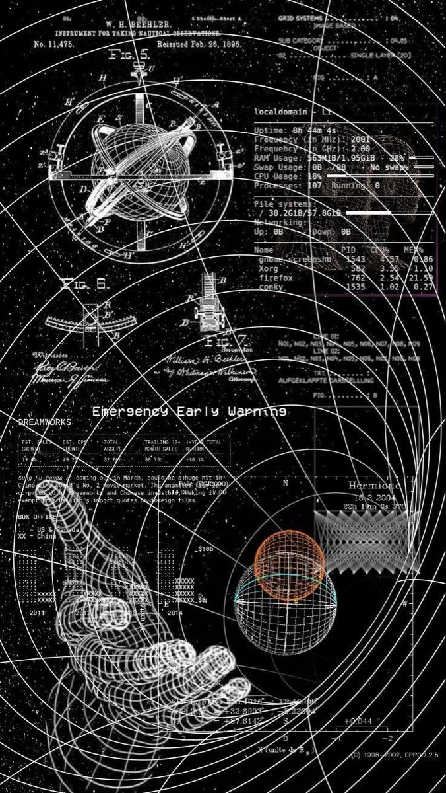
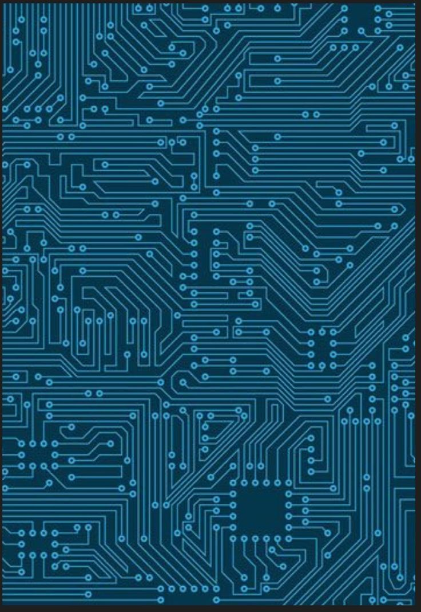
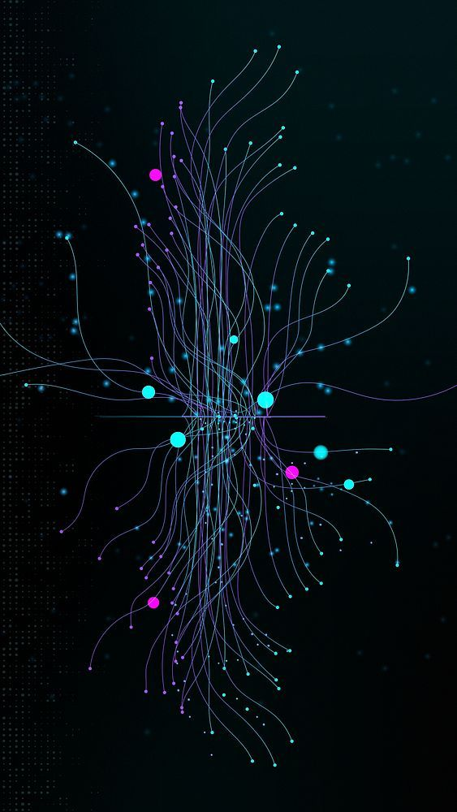

Quais seus protocolos?
São alguns protocolos usados na IoT:

MQTT
Protocolo leve e eficiente para comunicação entre dispositivos com baixa capacidade de processamento e largura de banda limitada.

CoAP
Protocolo para comunicação entre dispositivos com recursos restritos, como sensores e atuadores.

HTTP/HTTPS:
Embora mais robusto, é utilizado em aplicações onde a segurança e a compatibilidade são prioritárias.

Zigbee e Z-Wave:
Protocolos para redes de sensores sem fio de baixa potência, utilizados em aplicações como automação residencial e monitoramento ambiental.